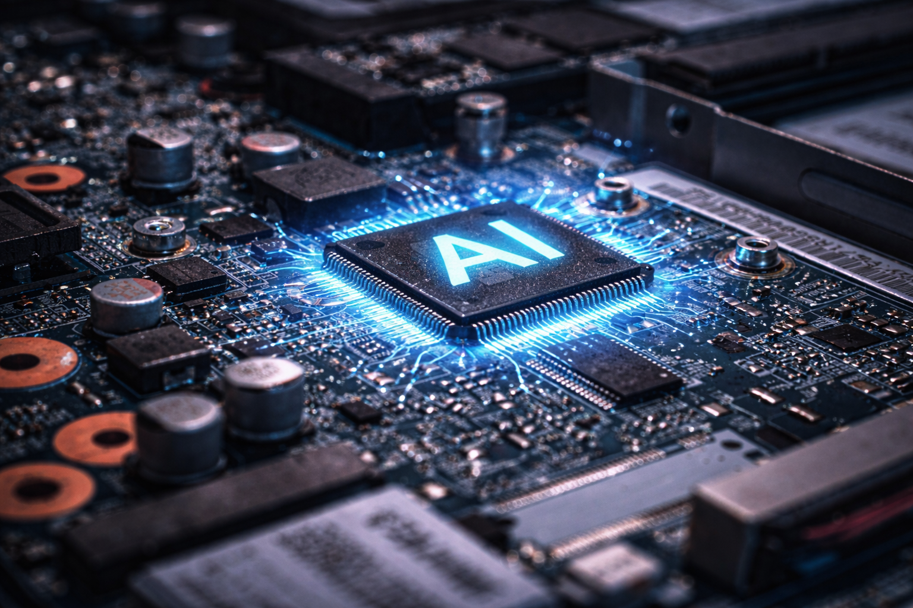
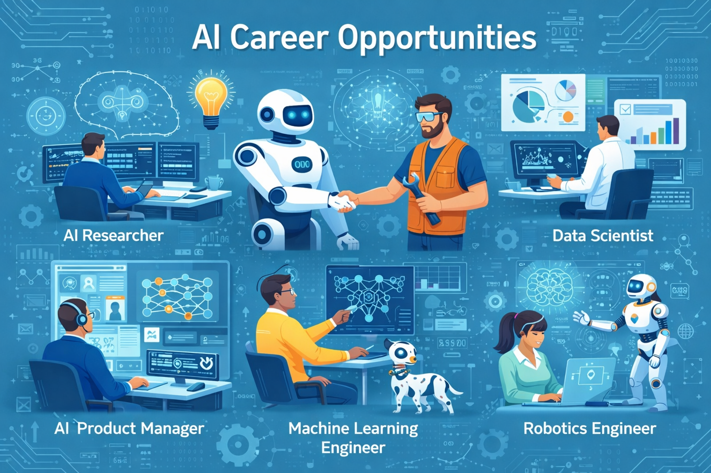

Exploring the Future of Smart Technology

Artificial Intelligence (AI) is transforming the modern world by enabling machines to think, learn, and make decisions like humans. AI systems help automate tasks, analyze large amounts of data, and improve efficiency in various industries.
AI is widely used in healthcare for disease detection, in finance for fraud detection, in education for personalized learning, and in transportation for self-driving vehicles. Technologies such as machine learning, deep learning, and natural language processing power modern AI systems.

The demand for AI professionals is rapidly increasing. Careers such as AI Engineer, Data Scientist, Machine Learning Engineer, and Robotics Engineer offer exciting opportunities. Learning programming languages like Python and understanding data structures and algorithms are important for building a career in Artificial Intelligence.